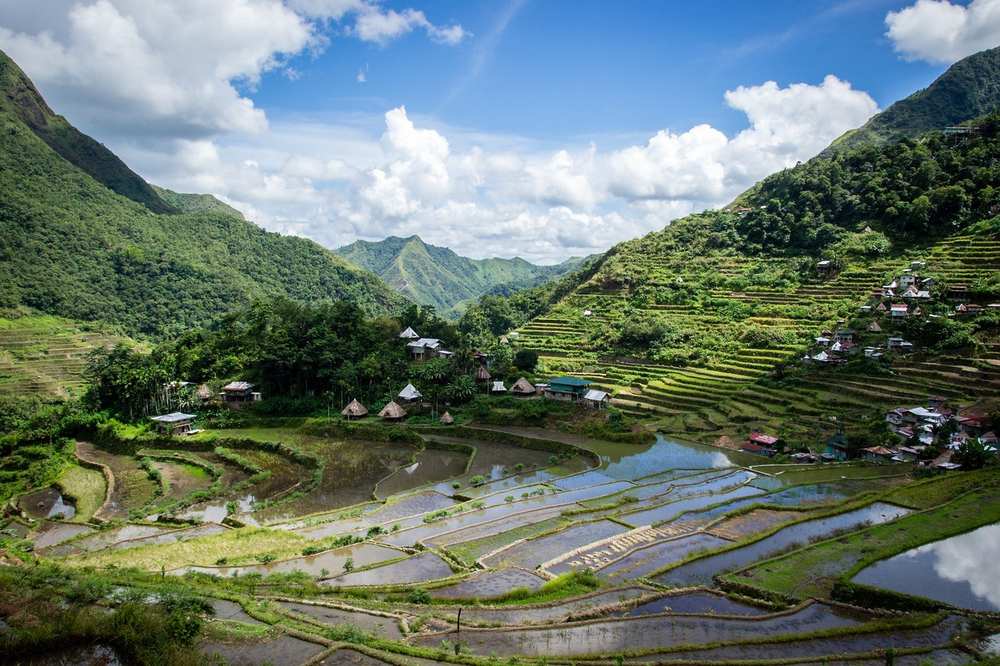

When you are taking a vacation anywhere you probably have a reason you went there, if that is visiting family, exploring different places, experiencing new and exciting things, or just having a relaxing time at the beach. And this is why I'm here, to give you some motivation to travel to the Philippines. And here on Sites and Activities I'll tell you about some of the many things to be done and places to be seen.
Sites
As suggested by the title, we'll be first taking a look at some places just waiting to be seen by you! And for the sake of simplicity, we'll mostly be looking into the close region around Bohol, since if we talked about more than that, we would be here all day. This should not deter you from visiting other places! or looking into them yourself.

Chocolate Hills
Starting of sweet, we have the Chocolate Hills! Located in Bohol, these 1.260 to maybe 1.776 topps are grass-covered hills which turn to look like Chocolate sweets during the dry season! This is a very popular site amongst tourists!

Filipino Tarsier
Since we're already in Bohol, let's talk about the Philippine tarsier. The Carlito syrichta, better known as the Philippine tarsier, is an endangered species of tarsier, being the only member of the genus Carlito, which can be found in the southeastern part of the archipelago, particularly on the islands of Bohol, Samar and Leyte! The name, tarsier, comes from it's elongated tarsus, or ankle bone.

Banaue Rice Terraces
Rice being the most important food in the Philippines makes the Banaue Rice Terraces very important, but not only for food, but also for history, as it was carved by hand by the local indigenous Ifugao tribes for over 2.000 years ago! This also being located in the Ifugao mountains closer to the capital of Manila.

The island of fire
Camiguin island, also called "The island of fire", is named after the seven volcanoes surrounding it. Although there are multiple islands, White Island is recommended to check out, with it's beautiful white sand and good view of the volcanoes. With a mention of a beach, we're lead right into the next part:
Activities
Second on the list was Activities. There are many different things you can do in the Philippines which involves more than your eyes. Now we'll be taking a look at fun and exciting things you can do!
Beach activities
Since we already mentioned the beach above, let's start with that. In the Philippines, there are tons of beaches everywhere where you can do lots of different fun beach activities, like swimming in the ocean waters, collecting the interestingly patterned seashells, or just relaxing on the soft sandy beach (although beware, there are also stony beaches)!
Off shore
There are also lots of off shore activities, like diving or snorkling with the vast variety of underwater sea life, like different fishes, blue starfish, huge corals, and maybe even seasnakes (be careful around them and don't panic, they're not hostile, but can be very dangerous because of their venom)! or boating down the horizon on the never ending, calming sea.
Hiking and sightseeing
You've already seen some places mentioned above, so what better way to see some of them by taking a nice trip! Taking a fun trip around the Philippines to look at the many cool places and structures around. Just be prepared for the heat and sweat and you'll be alright.
Shopping
Whether it's a huge air-conditioned shopping center or a plenty-filled varied street market, you will never run out of things you want to buy! From clothes to shoes, and from random stuff to food, you better make sure you have space in your luggage for everything you buy!
Eat
Although it has it's own page, food is so important it's worth mentioning here as something you must do! Or should i say taste!
That's all for Sites and Activities. Hope I've awakened your lust for the Philippines a bit more with this!